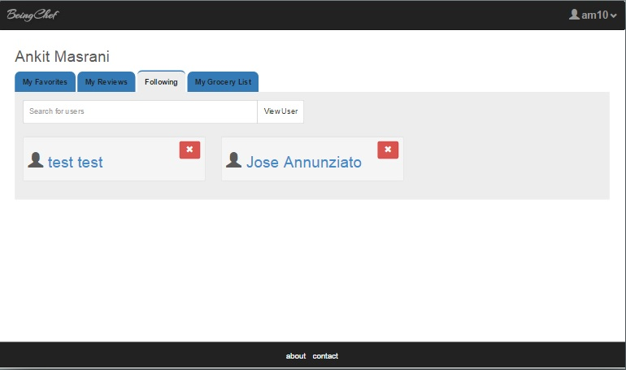
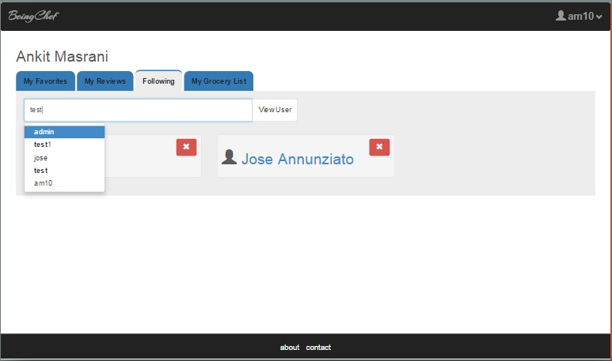
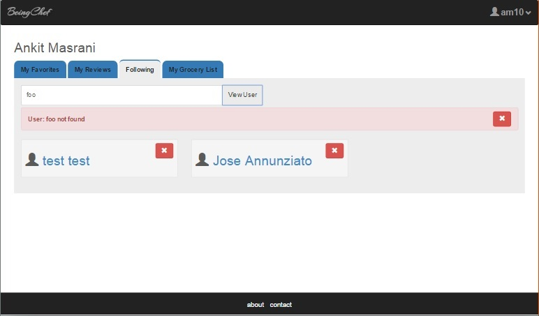

BeingChef User Dashboard-Following
The user dashboard page consists of the name of the user in the heading and a tab structure to
allow the user to navigate to various sections of his profile.
- Shown below is the following tab of the user.
- On this tab the user can view the other users it is following and by clicking on the other user's name link, the
user ca view his/her's activity (favorites and reviews)
-
This page also allows the user to search for other users (by usernames) using the search bar in the tab.
The search bar has an auto-complete feature allowing the user to perform partial searches.
-
Trying to view a non-existant user will display an appropriate error message.
-
A particular review for a dish can be removed by clickin on the red remove icon besides the dish
image.
-
A particular followed user can be removed by clicking on the red remove icon besides the followed user's name
image.
-
Following Dashboard:

-
Auto-complete User Search:

-
Error searching user:
